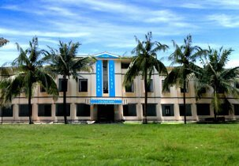
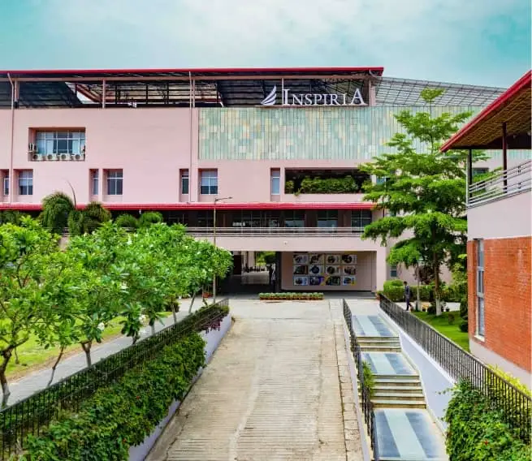
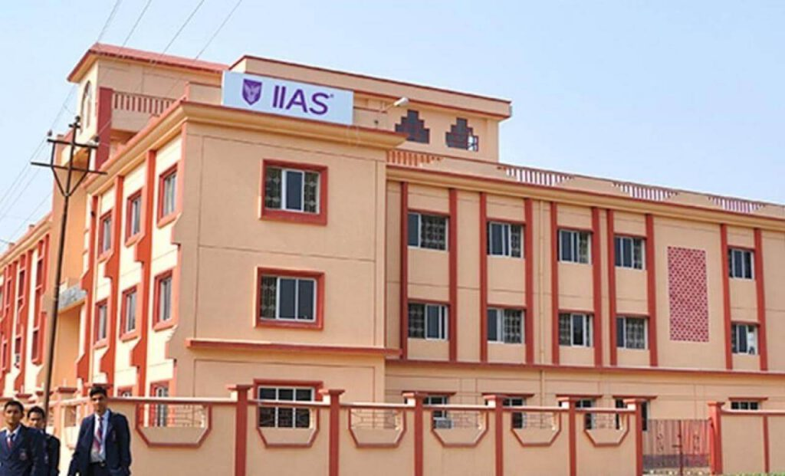
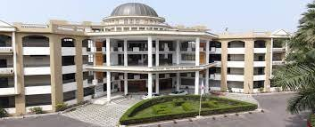
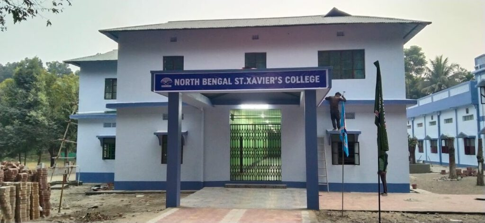
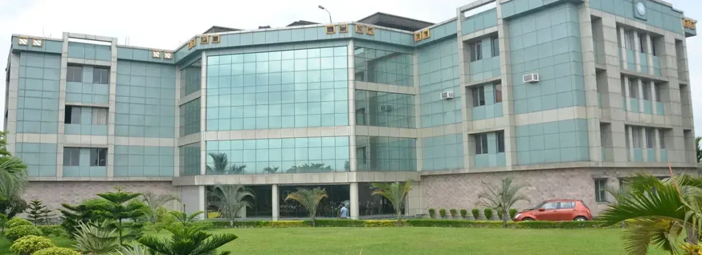
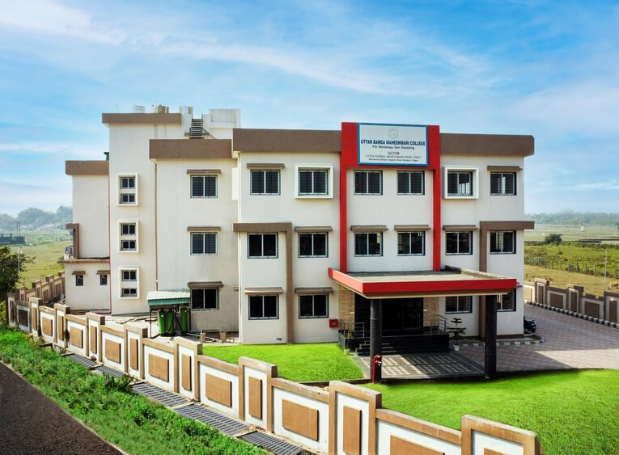
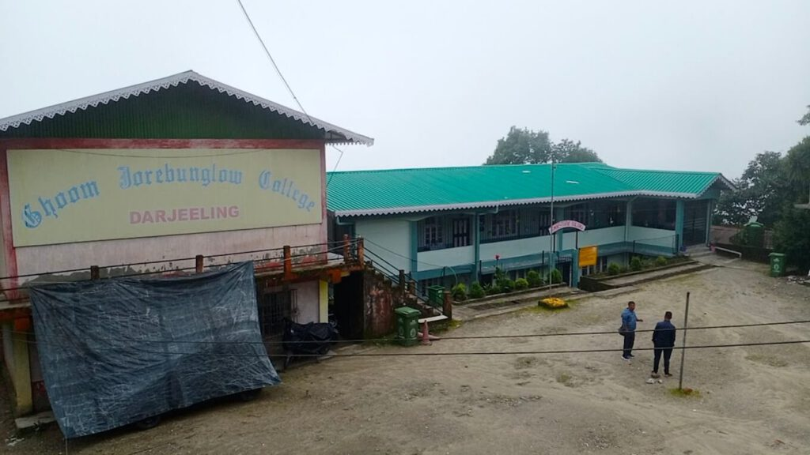
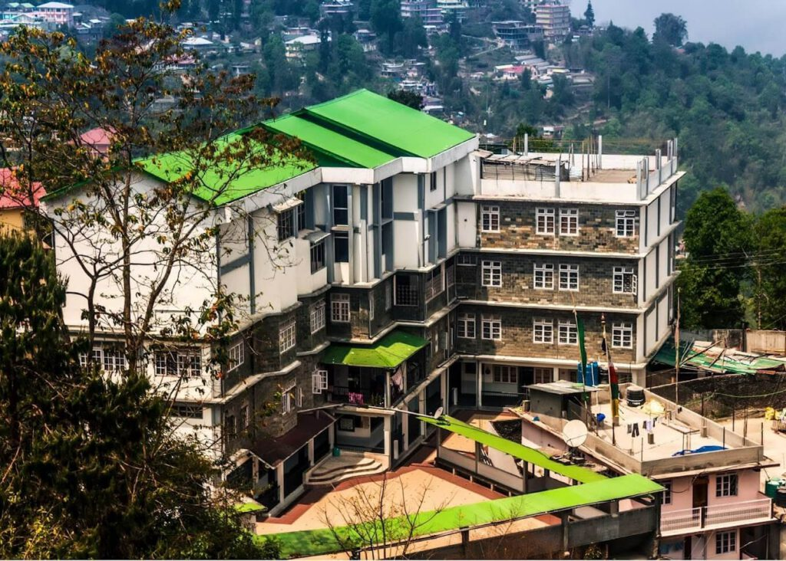

Are you looking for private colleges in North Bengal for higher studies? Many students choose private colleges because they offer different courses and easy admission options. Most private colleges in North Bengal are located in Siliguri, which is the main education hub of the region. Some private colleges are also situated in the Darjeeling district. These colleges provide good opportunities for students who want to continue their education nearby.
In this blog, all the private colleges are mentioned along with their courses, address, and fee details to help students make the right choice.
Salesian College

Salesian College Autonomous is a Catholic minority educational institution established in Sonada in 1938 and in Siliguri in 2009. The college aims to shape students into good citizens and responsible leaders. It has well equipped libraries, smart classrooms, laboratories, auditoriums, AV halls, reading rooms, knowledge centres, and sports facilities. The college also focuses on social responsibility by supporting first generation students from nearby tea gardens and running a community radio station for public awareness.
Courses Offered: BA, BA Hons, B.Com Hons, B.Sc Hons, B.Voc, BBA, BCA, BSW, and MA.
Fee Details: The total course fees range approximately between Rs 1,16,000 and Rs 3,00,000
Affiliation: University of North Bengal
Website: https://salesiancollege.ac.in
Contact Details:
Mobile No. 091445 47173
Email Id: admissions@salesiancollege.com
Address:
Siliguri Campus: Ward 42, Don Bosco Colony, Siliguri, West Bengal 734004
Sonada Campus: Hill Cart Road, Ring Tong Tea Garden, West Bengal 734209
Inspiria Knowledge Campus

If you are looking for a college that has modern education with real-world readiness, Inspiria Knowledge Campus in Siliguri instantly stands out. The college is established with the vision to make students industry ready from day one, the campus is known for its infrastructure – smart classroom, dedicated labs, a media studio and collaborative campus. The college has a diverse range of courses including BBA in hospitality, management, media science, design, BCA and many more. Besides academics, the college also encourages extra-curricular activities such as cultural events, fest, sports activities, and skill-building programs.
Courses Offered: BBA, BCA, and B.Sc
Fee Details: The total fees range across courses from Rs 2,82,000 to Rs 3,72,0001.
Affiliation: MAKAUT
Website: https://inspiria.edu.in
Contact Details
Mobile No.– 8900755550
Email Id: contact@inspiria.edu.in
IIAS School of Management

Established in 1990, International Institution of Advanced Studies has been a trusted in career-focused education for over three decades. IIAS has grown into one of the most trusted hospitality and management institutes in the region. Affiliated to MAKAUT, the college combines the modern classroom with well-equipped training labs and professional campus environment that feels both inspiring and career focused. The college offers popular program courses like BHA, BBA and Bsc in Hospitality and Hotel Management with other diploma courses. If you’re dreaming of beginning your career in this field, IIAS is the right choice for you.
Courses Offered: B.sc in Hospital and Hotel Administration and BBA (Hons.)
Fees: The course fees is Rs. 95000 per year
Affiliation: MAKAUT
Website: https://www.iias.org.in/
Contact Details:
Mobile No.- 096747 44818
Email: iias.siliguri@iias.org.in
Address: Hill Cart Rd, Dagapur, Siliguri, Bara Gharia, West Bengal 734002
Siliguri Institute of Technology

Located at the heart of Siliguri, Siliguri Institute of Technology is the IT based institute running under the vision of Techno India and only one of a kind in North Bengal. Established to offer quality technical training to aspiring students, the college was founded with the goal of strengthening industry-ready skills in the region. The college offers BTech, MBA and many other programs.
Courses Offered: B.tech, BHM, BBA, BCA, MBA and MCA.
Fee Range: The fee structure across different courses varies between Rs 2,60,330 to Rs 4,50,000.
Affiliation: MAKAUT
Website: https://www.sittechno.org/
Contact Details:
Mobile No.- 353 2778002
Email: info@sittechno.org.
Address: S.I.T Campus, Salbari, Sukna, Darjeeling, West Bengal, 734009
North Bengal St.Xavier’s College

North Bengal St.Xavier’s College is a christian majority college, established in 2007 by the Darjeeling Jesuit of North Bengal with permanent affiliation with the University of North Bengal. The college has two campuses, one in Matigara, Siliguri and other in Rajganj, Jalpaiguri. The college offers various undergraduate courses in Arts, Science and Commerce, and other professional courses including BCA and BBA.
Courses Offered: B.A., B.COM, BBA, B.SC and BCA
Fee Range: The fee structure across different courses varies between Rs 3,10,000 to Rs 4,50,000.
Affiliation: University of North Bengal
Website: https://nbxc.edu.in
Contact Details:
Mobile No.- 3532512703
Email: office_slg@nbxc.edu.in
Address:
Matigara Campus: P.Box. No.3, P.O, beside Jesu Ashram, Matigara, Jitu, West Bengal 734013
Raiganj Campus: Post Box No. 01, Balai Gachh, West Bengal 735135
Indian Institute of Legal Studies

Indian Institute of Legal Studies was founded in to provide legal education to students from North Bengal. It is the only private college to offer legal courses in Siliguri. The college provides quality education along with modern amenities on the campus. The college organizes various educational workshops like moot courts and more, and seminars to impart both theoretical and practical education to its students.
Courses Offered: BA.LLB, B.COM.LLB, BBA.LLB, LLB, LLM, M.A. (Public Administration and Governance)
Fees: The average fees is Rs. 11.75 lakh
Affiliation: University of North Bengal
Website: https://www.iilsindia.com/
Contact Details:
Mobile No.- 94340 74701
Email: admissioniils@gmail.com
Address: Dagapur, Siliguri, P.O. Salbari, P.S. Matigara, Darjeeling, West Bengal, 734002
Uttar Banga Maheshwari College

UBM College is located in Siliguri. Students study here after completing school education. The college offers different courses for higher studies. Teachers help students in their subjects. The college also provides scholarships for students who need financial help. It supports students in continuing their education.
Courses Offered: B.A., B.COM, BBA and BCA
Fees: The total course fees is between Rs. 60,000 to 1,70,000.
Affiliation: University of North Bengal
Website: https://ubmcollege.ac.in
Contact Details:
Mobile No.- 08001551000
Email: contact@ubmcollege.com
Address: R J Road, Siliguri, Ranidanga, West Bengal 734012
St. Joseph’s College
St Joseph’s College has roots going back to the school established in 1888 and the college section began functioning from 1927. It is run by the Jesuits and offers both undergraduate and postgraduate programmes in science, humanities and commerce. The college has a strong academic record in the hill region and often features in lists of prominent institutions from Darjeeling.
Courses Offered: BA, B.Com, B.Sc, B.C.A and M.A.
Fees: The total course fee ranges between Rs. 50,000 to 150,000
Affiliation: University of North Bengal
Website- https://sjcdarjeeling.edu.in
Contact Details:
Mobile No.: 03542252550
Email: info@sjcdarjeeling.edu.in
Address: Lebong Cart Road, North Point, Darjeeling, West Bengal 734104
Ghoom Jorebunglow Degree College

Ghoom Jorebunglow Degree College started around 2004 and serves the Ghoom and surrounding localities. It is an affiliated undergraduate college offering arts subjects such as English, Geography, History, Nepali, Political Science, Sociology and Economics. The college is small and community oriented and the fees are low as it is affiliated to the state university. This college is useful for students from the Senchal and Ghoom area who want a local option for a bachelor degree.
Courses Offered: B.A.
Fees: The total course fee ranges between Rs. 80,000 to 110,000
Affiliation: University of North Bengal
Website- https://ghoomjorebunglowcollege.com/
Contact Details:
Mobile No.: 09832436213
Email: admin@ghoomjorebunglowcollege.com
Address: Senchal Road, Senchal, Darjeeling, Senchal Forest, West Bengal 734102
Rockvale Management College

Rockvale Management College (RMC), Kalimpong is a co educational college affiliated to Maulana Abul Kalam Azad University of Technology (MAKAUT) and approved by AICTE. The college was established in the year 2012. It offers management related courses for students after class 12. Teachers help students understand subjects in a simple way. The college supports students in building knowledge for future careers.
Courses Offered: B.B.A and B.Sc (Hospitality and Hotel Administration)
Fees: The total course fee ranges between Rs. 2,50,000 to 3,35,000
Affiliation: MAKAUT
Website- https://rmckalimpong.co.in
Contact Details:
Mobile No.: 7811992023
Email: rmckpg@gmail.com
Address: 9th Mile, Dist, near Rockvale Academy Campus, Mongbol Busty, Kalimpong, West Bengal 734301
To conclude, North Bengal has both private and government colleges for higher education. While many students choose private colleges, most colleges in North Bengal are government colleges. Students can choose a college based on their course, location, and budget. We hope this blog helps students and parents in finding the right college.
December 27, 2025
Top Government Colleges in North Bengal

December 27, 2025